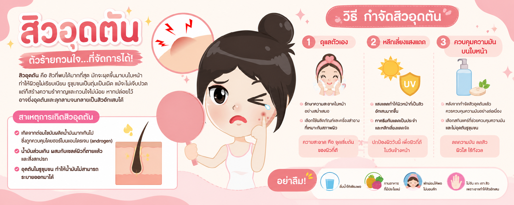

| สิวอุดตัน | สาเหตุการเกิดสิว | วิธีกำจัดสิวอุดตัน | |

สิวอุดตัน นับว่าเป็นสิวที่สร้างความกวนใจต่อผู้ที่ต้องเผชิญอยู่ไม่น้อย เพระาสิวอุดตันคือสิวที่พบได้มากที่สุด ซึ่งมักจะผุดขึ้นมาบนใบหน้าของเรา และสร้างความรำคาญใจให้กับเจ้าของใบหน้า เพราะมันทำให้ผิวดูไม่เรียบเนียน รูขุมขนเป็นตุ่มเป็นตื้นแม้ว่า
สิวชนิดนี้จะดูสมบูรณ์เสี่ยงเลี่ยงตัวไม่สร้างความเจ็บปวด แต่มันก็คือด้านพอสมควร ไม่มีทางหายไปได้เอง พูดง่าย ๆ ว่าถ้าไม่รีบกำจัดออกมันก็จะยิ่งอัดแน่นในรูขุมขน และอาจลุกลามจนเกินเยียวยา จนเข้าขั้นเป็นสิวโคม่าเลยทีเดียว